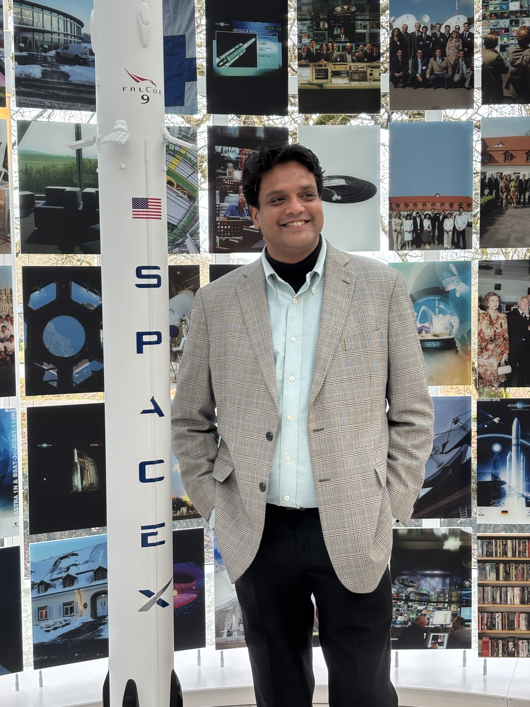

📷 Image credit: NASA · Public Domain

A 27-year career spanning consulting, MedTech, automotive, and the space frontier
A lifelong commitment to learning — across continents, disciplines, and decades
Specialising in Space Entrepreneurship, Economics, Commercial Space Strategy, Policy & Law — the disciplines at the heart of the new space economy. ISU brings together the world's leading minds in space science, engineering, business, and policy for an intensive, international programme.
A structured two-year immersion in Advaita Vedanta — the Indian philosophical tradition of Non-Duality — with emphasis on logic, ethics, and analytical clarity. Study included the Bhagavad Gita, Upanishadic texts, and the teachings of Adi Shankaracharya.
This programme profoundly strengthened reflective and values-based decision-making, enhanced systems-level critical thinking, and cultivated the equanimity and clarity essential for leadership in complex, high-stakes environments.
Advanced postgraduate study in accounting, financial management, and business strategy — providing the technical and analytical foundation for senior finance and operations roles at KPMG, Thoratec, and beyond.
Rigorous professional qualification in accounting, taxation, auditing, and financial law — one of the most demanding professional credentials in India, forming the bedrock of a career built on financial precision and integrity.
Undergraduate study in commerce, economics, and business at one of India's most prestigious liberal arts institutions — cultivating a love for critical thinking and intellectual rigour that has never left.
Foundational schooling at DAV — an institution rooted in the values of the Dayananda Anglo-Vedic tradition, blending academic discipline with cultural and ethical depth.
The thinker, the sportsman, the philosopher, the explorer
My love for philosophy is not academic — it is lived. Between 2020 and 2022, I spent two years at Arsha Vidya Gurukulam studying Advaita Vedanta, the Indian philosophy of Non-Duality. Rooted in the Upanishads and synthesised by Adi Shankaracharya, Advaita teaches that the distinctions we perceive between self and world, individual and cosmos, are ultimately appearances upon a single, undivided consciousness.
The Bhagavad Gita holds a special place in my thinking — particularly its teachings on nishkama karma (action without attachment to outcomes) and viveka (discernment). These principles are not just spiritual; they are profoundly practical guides to leadership. A leader who acts without ego-attachment, who can distinguish the essential from the ephemeral, and who remains steady amid uncertainty — that is the leader the Gita describes, and the kind of leader I strive to be.
"You have a right to perform your prescribed duties, but you are not entitled to the fruits of your actions." — Bhagavad Gita, 2.47
This philosophical foundation directly informs my ISU research paper on the Impact of Philosophy & Theology on Space Exploration — my argument that as humanity ventures into the cosmos, we need not only rockets and algorithms, but wisdom traditions that tell us why we go, and how we should behave when we get there.
Throughout my career I have been privileged to engage with some of the world's and India's most dynamic leadership communities:
The Young Presidents' Organization in particular was a formative experience — a global network of CEOs and business leaders committed to learning from one another, leading with integrity, and making a difference in their communities and beyond.
I grew up with cricket — the game that teaches patience, strategy, and the art of reading conditions. A well-played innings, like a well-run business, requires knowing when to attack and when to defend.
Golf came later, and with it a different lesson: the course doesn't forgive inconsistency. Neither does the market. I love golf for its meditative quality — just you, the course, and an honest reckoning with your own technique.
I have run half marathons — 21 kilometres that teach you more about discipline, pacing, and resilience than almost any boardroom experience. The last few kilometres are pure philosophy: the mind wants to stop; the body knows it can continue; and something deeper — call it will, or purpose — keeps you moving.
Music is my constant companion. I am moved by the mathematical precision of Carnatic classical music — where a raga is both a scientific structure and an emotional universe — and equally by the improvisational freedom of jazz, where listening to others is as important as playing your own part. Not unlike leadership itself.
Food, for me, is philosophy made edible. Every cuisine is a civilisation's answer to the question of what matters: what we grow, how we prepare it, whom we share it with. I am an enthusiastic explorer of kitchens across the world — from the spice-forward curries of Tamil Nadu to the delicate terroir-driven cuisine of Alsace, where I now study and live.